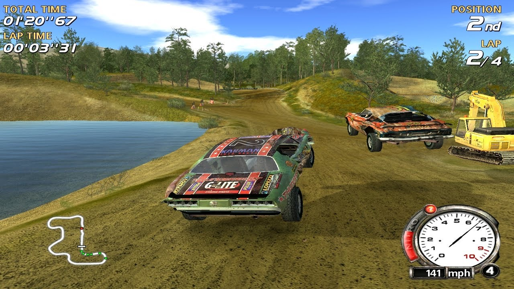
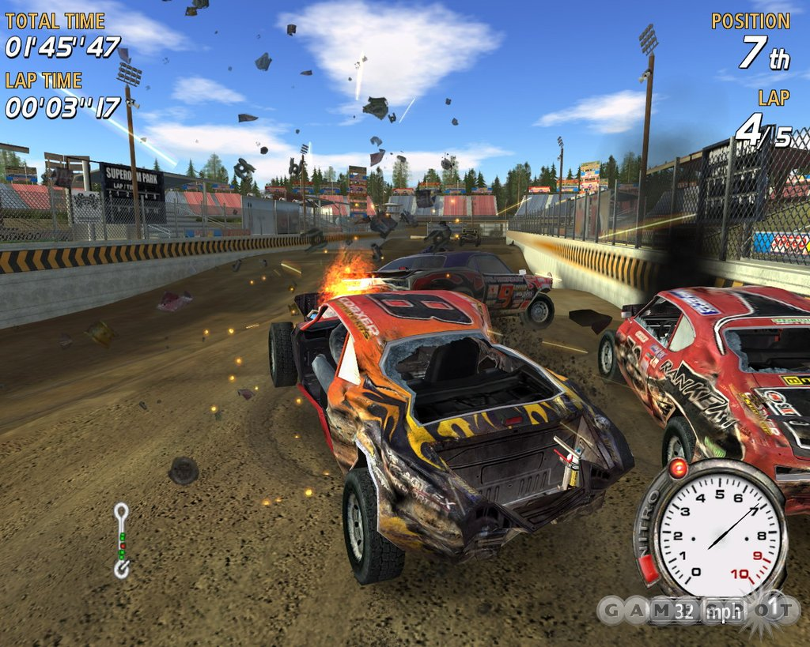
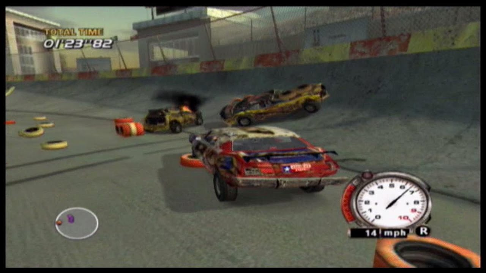

jocurivechi1=["NFSHP"]
jocurivechi2=["F1"]
Need for Speed: Hot Pursuit 2 este un Joc de curse din 2002.
Este făcut pentru a șasea generație de console. A fost făcut de Ea Black Box. Este ultimul din era clasică Need for Speed.
A fost premiat ca cel mai bun joc de curse pentru console.
Dacă scopul tău este să devii regele șoselelor, dar în același timp dorești să îți dobori inamicii, atunci FlatOut este potrivit pentru tine.
FlatOut a fost fondat de Bugbear Entertainment. Este un joc plin de adrenalină, distrugere și cascadorii spectaculoase. Intră in cursă alături de alți 8 concurenți și dovedește tuturor că ești cel mai bun!



Nascar Racing a fost lansat în toamna anului 1994. Jocul oferă posibilitatea de a concura împotriva a 38 de piloți pe marile circuite specifice curselor de tip Nascar, cum ar fi: Bristol, Martinsville.
Nascar Racing are un număr de exemplare vândute de pană la 400.000 și oferă o experiență intensă atât SinglePlayer cât și MultiPlayer.
Dacă cursele ilegale nu sunt pe placul tău,F1 challenge este aici să salveze situația!
Fondat in anul 2001 de Electronic Arts, F1 challenge este și va rămâne un joc competitiv atât SinglePlayer cât și MultiPlayer;